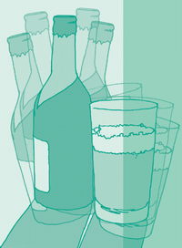

Ein Gläschen Bier oder Wein am Feierabend ist ein Genuss und soll sogar gesund sein. Was aber, wenn es mit der Zeit mehr wird? Wo liegt die Grenze zum Missbrauch oder zur Alkoholabhängigkeit?
Alkoholabhängigkeit ist eine ernst zu nehmende Krankheit, die weiter verbreitet ist, als allgemein angenommen. Aber sie kann erfolgreich behandelt werden, wenn Einsicht und Behandlungsbereitschaft der Betroffenen da sind.
Hinweise auf eine drohende oder bereits bestehende Alkoholabhängigkeit können sein:
| Bagatellisieren der Trinkmenge | |
| Leistungsschwankungen, Leistungsabfall | |
| Vorratshaltung, heimliche Depots | |
| Zittern und Nervosität bei Abstinenz | |
| Unfähigkeit, das ernst gemeinte Versprechen der Abstinenz einzuhalten |
